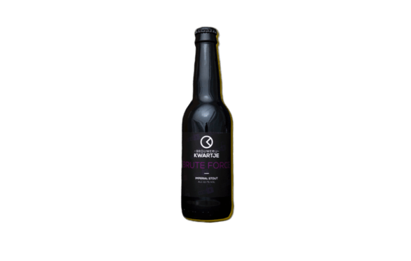
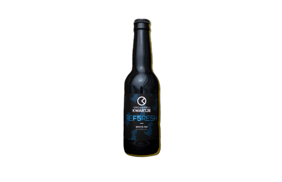

0,0%
Onze Brute Force
hebben wij natuurlijk
ook zonder alcohol!
de Brute Force heeft
een bittere smaak en
heeft een mix van wat
fruit smaken.
0,0% BIEREN
_________________Ben je sinds kort begonnen met het gezonder levensstijl en sporten? Maar je hebt toch ook wel graag een drankje? Dat kan bij Brouwerij Kwartje. Wij hebben van al onze bieren ook een 0,0% variant als je een wat fitter levensstijl wilt beginnen. De smaken zullen zeker niet veel verschillen van onze bieren met alcohol. Kom zeker een keer langs voor een proeverij!
Hoe worden onze alcoholvrij bier gebrouwen?
Er zijn verschillende manieren om alcoholvrij bier te brouwen. Wij gebruiken de destillatie methode. Bij deze methode wordt bier
gewoon gebrouwen met alcohol.. Door de bier te destilleren met vacuümdestillatie wordt de alcohol onttrokken van de bier.
Door vacuümdestillatie wordt zoveel mogelijkenergie bespaard bij het destilleren. Zo worden onze alcoholvrij bier gebrouwd!

Brute Force 0,0%
Brute Force 0,0%

Wildcard 0,0%
0,0%
Onze Wildcard heeft een tropische smaak met een bittere afdronk. Hierdoor krijgt u een heerlijke verfrissing.
Onze Wildcard heeft een tropische smaak met een bittere afdronk. Hierdoor krijgt u een heerlijke verfrissing.

Firewire 0,0%
0,0%
Onze Firewire laat jouw mond helemaal in vlammen staan. Het is een pittige bier voor de liefhebbers.
Onze Firewire laat jouw mond helemaal in vlammen staan. Het is een pittige bier voor de liefhebbers.

Refresh 0,0%
Refresh 0,0%
0,0%
Zoals de naam al zegt is het een zeer verfrissende bier. Een mix van munt en tropische fruit is hierin zeker niet te missen.
Zoals de naam al zegt is het een zeer verfrissende bier. Een mix van munt en tropische fruit is hierin zeker niet te missen.

Any Key 0,0%
0,0%
De ingrediënten in dit bier is zeer fruitig en fijn om te drinken. Om het bier zoet te krijgen is er gebruik gemaakt van melksuiker.
De ingrediënten in dit bier is zeer fruitig en fijn om te drinken. Om het bier zoet te krijgen is er gebruik gemaakt van melksuiker.

Ddos 0,0%
0,0%
De heerlijke Brute Force heeft een zoete smaak. Het is een mix van grapefruit en tropische fruit. Zeker niet te missen op een zomerse dag!
De heerlijke Brute Force heeft een zoete smaak. Het is een mix van grapefruit en tropische fruit. Zeker niet te missen op een zomerse dag!

RSI 0,0%
0,0%
De RSI is een zeer zoete bier met een bloemige geur. Een frisse bier voor de warme dagen maar ook voor heel het jaar door.
De RSI is een zeer zoete bier met een bloemige geur. Een frisse bier voor de warme dagen maar ook voor heel het jaar door.